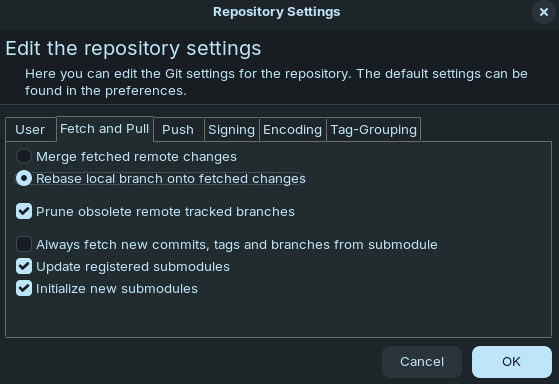

Einrichtung von Git
Hier geht es jetzt nur um eine kurze und möglichst unkomplizierte Einrichtung von Git. Du musst gar nicht alles verstehen, was im Hintergrund passiert. Das kann an späterer Stelle irgendwann auch noch kommen.
Account bei tuxgit erstellen lassen
Du brauchst einen Account für unseren Git-Server. Aufgrund von Spam ist die Registrierung nicht öffentlich möglich, deswegen musst du dafür eine E-Mail an tux schreiben. Die Web-Adresse unseres Git-Servers ist: https://git.zahlenlabyrinth.de/.
Eine Git-GUI aussuchen und herunterladen
Git ist per se erstmal ein Kommandozeilen-Programm. Das ist nicht für jede*n was – erst recht nicht, wenn man noch nicht so viel mit Coden zu tun hatte. Das ist aber gar nicht schlimm, denn es gibt zahlreiche verschiedene grafische Oberflächen für Git, die das Arbeiten sehr erleichtern können. Verbreitet bei uns sind gerade diese hier:
SmartGit
für Windows, MacOS, Linux
kostet was, es gibt aber eine non-commercial Lizenz für gemeinnützige Organisationen und Bildungseinrichtungen: Apply for Non-Commercial License
Dafür brauchst du eine gemeinnützige Organisation, mit deren E-Mail-Adresse du dich dort registrieren kannst. Alternativ geht auch eine Uni-Mail-Adresse.
SourceTree
für Windows, MacOS
TortoiseGit
für Windows
Oder man nutzt es in der Konsole. Dann braucht man die Git Shell: Link.
Einrichten eines Liederbuch-Repos
Da du Git vermutlich zum ersten Mal nutzt, brauchst du zuerst einen SSH-Key. Der SSH-Key ist dafür da, dass das Remote-Repo weiß, dass dein lokales Repo auch zu dir gehört. Sonst könnte ja jeder, der den SSH-Link hat (siehe dazu Abbildung 1), Zugriff aufs Repo haben. Er ist also ein Identifikationsmittel für deinen Account. Dafür hinterlegst du den public key in deinem Git-Account und sagst deinem Git-Programm (SmartGit, SourceTree, TortoiseGit), wo deine Schlüssel-Datei liegt. Diese Datei ist auch nochmal extra passwortgeschützt. Sie sollte auf keinen Fall gelöscht oder verschoben werden. Die lange Erklärung kannst du hier nachlesen.

SSH-Key erstellen
Du musst dir einen SSH-Key erstellen und das Passwort, public key und private key und Schlüsseldatei speichern/aufbewahren. Eine Anleitung dafür findest du hier.
Anschließend hinterlegst du den public key in deinem Git-Account (unter Einstellungen -> SSH- / GPG-Schlüssel -> Schlüssel hinzufügen).
Später wirst du beim „Klonen“ eines Liederbuchs irgendwann nach deiner Schlüsseldatei gefragt (für die du dann auch das Passwort brauchst). Es ist also wichtig, dass du beides gut speicherst!
Klingt alles sehr kompliziert und das ist es auch, aber: Du musst das nur einmal machen und dann funktioniert es einfach. Wenigstens etwas.
Ein neues Liederbuch-Repo mit dem Vorlagen-Repo erstellen
Da du ja ganz neu einsteigst, hast du vermutlich noch kein eigenes Liederbuch-Repo. Deswegen erstellen wir erstmal eins. Das tolle ist: Wir haben zu genau diesem Zweck ein Vorlagen-Repo gebaut, mit dem du sofort die meisten wichtigen Sachen eingerichtet hast. Wichtig: Du brauchst vorher einen Account bei tuxgit (siehe Kapitel 1). So geht’s:
Du gehst zu unserem LilyPond-Vorlagen-Repo auf unserem Git-Server.
Du klickst auf
Dieses Template verwenden.Du folgst den Schritten (Besitzer*innen, Name, … festlegen) Wichtig: Bei Template muss
lilypond-vorlagenausgewählt sein.Dann kannst du einfach unten weitermachen.
Ein bestehendes Liederbuch-Repo klonen
Wenn du die obigen Schritte befolgt hast oder schon ein Liederbuch-Repo eingerichtet hast und dass einfach nur klonen willst, dann geht das so:
- Remote-Repo klonen
Je nach GUI funktioniert das unterschiedlich. Irgendwo gibt es die OptionCloneund da dann einen Dialog, in dem du unter anderem den SSH-Link des Repos eintragen kannst. Wichtig ist bei dem Prozess: Submodule müssen inkludiert werden. Irgendwo kann man dann den Speicherort des lokalen Repos festlegen. Es empfiehlt sich, einen Ordner zu haben, wo alle Git-Repos drin sind. Dies ist aber nicht notwendig für irgendetwas.- SmartGit: In Smartgit navigierst du zu Repository -> Clone und folgst dem Dialog. Zuerst gibst du deinen SSH-Link ein. Dann achtest du darauf, dass Submodules inkludiert werden und wählst zuletzt den Speicherort des Repos aus.
- Als nächstes müssen die Submodule noch richtig eingebunden werden, das geht nämlich leider nicht automatisch. Du brauchst auf jeden Fall unsere Common-Includes als Submodul. Wenn du mit unserem Liederpool arbeitest, brauchst du noch die Song-Includes als Submodul. Für jedes Submodul musst du diesen Prozess einzeln durchführen.
Auch das funktioniert in jeder GUI anders. So geht es bei SmartGit:- Im Menü Remote anwählen -> Submodule -> Add
- Dann brauchst du die SSH-Links der Submodule. Die findest du auf die bekannte Art und Weise (siehe Abbildung 1).
- Im nächsten Schritt wird gefragt, an welcher Stelle das Submodul eingebunden werden soll, da kannst du einfach weiterklicken.
- Fertig!
Wichtige Git-Einstellung
Wichtig ist jetzt noch, dass du in deiner Git-GUI einstellst, dass das Standardverhalten bei Pulls Rebase ist. Dazu musst du deine Git-Config ändern. Das geht meist über ein Einstellungsmenü. In SmartGit über Repository/Settings und dann sollte es so aussehen:

Oder du änderst die User-Git-Config und fügst folgende Zeilen hinzu:
[pull]
rebase = trueUnd jetzt kann’s richtig losgehen!